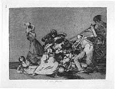
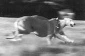
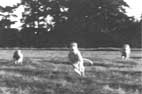
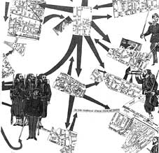
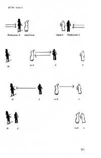

by Dell Olsen
In an increasingly technologised world varying degrees of liveness are already in production. Our relationship to events is bound up with their representation across a range of media including film, video and the internet. The work of Leslie Scalapino, Fiona Templeton and Carla Harryman articulates a complex investigation of the live subject in relation to the time of event and to the time of writing itself. These relationships are acutely bound up with an exploration of event as representation—representations which paradoxically might occur simultaneously with their ‘live’ counterparts. The term ‘degrees of liveness’ is not meant to imply that one degree is more ‘live’ than another but that in each of the works considered the temporal moment of the live cannot necessarily be fixed as occurring entirely within the present moment. Through their work Scalapino, Templeton and Harryman critique the idea of a monolithic live by unsettling the temporal expectations of both the audience and subject.
Leslie Scalapino, Goya’s L.A.


Francisco
de Goya, “And Are Like Wild Beasts,”
Etching from The Disasters of War (1811-12).
The 1992 L.A. riots and The Disasters of War (1811-12), a series of etchings by Francisco de Goya y Lucientes (1746-1828) hover obliquely over Leslie Scalapino’s play, Goya’s L.A. The play’s tangential relation to these two sources raises questions concerning the construction of the live subject in relation to events, specifically events that are transmitted to the subject through live and electronic media. The play looks at the way in which the ‘live’ subject might be constituted through its relationship to the ‘technology’ of event. Both sources function as a kind of lens through which to re-write/re-view the discourse of event, the discourse of the live and electronically mediated subject. Scalapino describes the play’s performance as “images occurring in a rhythm”(5). “Images” in rhythm rather than words. This mimics the acute mediatisation of images that accompanied the L.A. riots, and it also relates to the hybrid nature of the play itself which includes directions for slide projections, taped and live voices and characters ‘real’ and imaginary—many of the visual techniques used by the media to ‘transmit’ the L.A. riots to those inside and outside the city. The play calls for a paratactic form of reading that posits meaning in the relationships between blocks of words and their repetition. Scalapino describes these images as constituting narrative, as “occurring in a rhythm of presentation as if ‘not planned’ as, but are, elements of a linear plot...”(5).
This sequencing of images relates to Goya’s eighty five etchings, The Disasters of War (1811-12). Each etching depicts a different view of the ongoing guerrilla conflict between French troops and their Spanish opponents in the wake of Napoleon’s occupation of Spain. The Disasters depict a squalid and grotesque vision of humanity; rape, murder, mutilation of corpses and the abandonment of children against a backdrop of the effects of famine. Each plate bears a caption, and sometimes an observation about what is taking place in the design; occasionally, Goya adds a moral or an epigram: “with reason or without (rightly or wrongly); “the same;” “and are like Wild Beasts;” “for this you were born;” “treat them and then on again;” “bitter presence.” “I saw this,” reads the caption to one of Goya’s etchings but what does this mean? Is it an inscribing of the presence of the ‘live’ subject? And what exactly is this when considered in relation to representations made after the event. Like Scalapino he is writing from the ‘live’ standpoint of a subject who has experienced some of the events, (hence “I saw this”) but many of the things that he depicts have been transmitted to him, by word of mouth, by other sketchers, just as the events of the L.A. riots have been mediated to Scalapino ‘live’ via the television, via the newspapers. The live subject’s “I saw this” is a tissue of varying degrees of liveness that have occurred over a period of time.
Fred Licht compares The Disasters to twentieth century news photography both in terms of content and in terms of material processes: “both are almost infinitely reproducible, both reproduce imagery to black and white, both are created by physical change wrought on the surface of a plate, and both are meant to be broadcast very widely and at small expense”(134). This is also true of writing itself, infinitely reproducible, in black and white, made by physical changes to a surface, broadcast widely and at small expense. This connection between etching, photography and writing implies a direct relationship to the ‘live’ event and the performative role of the subject or subjects in that event. It foregrounds a possibility for writing in relation to performance that seems to stand in opposition to Peggy Phelan’s definition of live performance as that which is not reproducible.
Scalapino’s writing presents ‘liveness’ as it is experienced by the subject in an acutely mediatised society which is always ‘live’ but also infinitely reproducible. This is not to confuse the idea of a series of gradations of liveness with a discussion of the witnessing an event ‘at first hand,’ gradations of liveness emerge at precisely the moment that the possibility of representation comes into play which might be before, after or during the event itself. Scalapino’s Goya’s L.A. seems to explore positionings of the writer/artist in relation to events mediated through electronic communication systems and surveillance. Scalapino’s work, like Goya’s Disaster series does not add up to one ‘version’ or perspective of events and this is linked to the fact that both Scalapino and Goya articulate ‘liveness’ in reproducible media.
Gradations or degrees of liveness are intimated on a number of levels within Scalapino’s text: slides, voice-overs and video mediate the time of the subject. One of the recurring images projected during the play is that of greyhounds running, “in a blur of motion as if turning on each other in air”:

(51)
In her introduction Scalapino relates these images to the unfolding of the text itself: “The phrases continue to change to become movement in itself. The movement induces a greyhound flying curled legless”(8):

(11)
Just as the photograph is a frozen moment in time so each sentence is its own discrete event. A slice of time, in between others, between leaving the ground and returning to it. A similar effect is achieved by the use of the voice-overs:
VO of woman 3: (Akira & Defoe freeze, and then walk
and freeze gazing down)
There can’t be any movement of people
They stand at the side.
They never move amidst the hanging
slabs, then
stand in the audience after a while.
They stand in a group as if in a
field, not work-
ing, with their hands down.
They’re loitering. I saw these men
simply stand-
ing in fields, when I was driving.
There’d be some.
Then more further on.
They were guards of dolphin mountains,
though
they were standing in fields.
People are standing. Their eyes move.
They
don’t face each other.
(16)
These gradations of liveness problematise an easy definition of the time of event. Like the stills of the projected photographs, the voice-overs overlay the live performance with another present, a live recorded speaking voice that is re-played as a frozen moment of previous action. This mirrors the construction of the play itself which is an overlapping of differing moments. The voice-over also ‘reads’ projected slides of texts (but of course she can’t read it at the same time as we, the audience see it). There is a gap between her reading and our reading of the events, yet the play assimilates them at the same time as drawing our attention to it through the incorporation of a recorded ‘live’ voice. The overlapping of live action with a previously recorded image or sound is also reversed as projected images are themselves overlaid with other projected images: “Another slide of rotting coyote landscape collaged with lotuses”(18). The images of past actions are already themselves collaged and overlaid with others which mimics the ebb and flow between memory, fantasy and history. It also focuses on the power of the recording medium; writing, memory, photography to themselves fabricate: “Memory’s being involuntary and repeats things that do not occur—we have to do that—so that its motions are the same as there. (She exits)”(33). The projections are also used to refer to the intended site of the text as a serial in the newspaper: “Slide of greyhound. Then slide in Japanese of the following passage, as if vertical panels of newspaper columns.” Again there is a folding of the outside in—the intended site of the writing becomes a space within the live performance itself rather than being the container, the outside frame, the outer boundary of the work, it is a cell within it.
In “Of the Refrain” Gilles Deleuze and Felix Guattari describe the way in which sound and rhythm mark boundaries of territorial space and designate order within that space as well as create nodes and networks beyond it. The rhythm of images in Goya’s L.A. also mimics the space of the city, a repetition of enclaves, discrete units for living in, barricading oneself in, breaking out of, returning to. This territorial space is a milieu, a milieu that is never static but which is “vibratory,” a piece of space-time that resonates with its own refrain, its own periodic repetition of itself as a subject.(313) The vibratory quality of the space-time block is not limited to sound, “we call a refrain any aggregate of matters of expression that draws a territory and develops into territorial motifs and landscapes (there are optical, gestural, motor, etc., refrains).(323) Rhythm equals plot, plot equals rhythm but these are not separate from the subject itself; rhythm equals plot equals subject. A block of space-time like the subject is coded to repeat its refrain and it is the variations of this periodic repetition that constitutes itself and what is apart from it. “Transcoding or transduction” is how Deleuze and Guattari refer to the way in which the block of space-time that has been constituted by the refrain can be built into or leads directly to another, that is either dissipated or constituted in the exchange.(313) It is like a map of a space, a plot which does not unfold in one direction from ‘a - b’ but folds and unfolds, only to fold again and continue, plotting itself unfolding: “Dead Souls: Every paragraph—sometimes a line is a paragraph—is by itself. As if the segments are an expanse, or settings of separate compartments. Which don’t blur into each other”(63). Like hypertextual links or the rhythms of the refrain Scalapino’s subjects are self-generating and produce others in periodic dissipation and exchange.
Goya’s Disasters likewise represent a change in the usual relations of space and time and therefore to the figuring of the live subject. There is no fixed centre in Goya’s vision, “we cannot take our bearings in the directionless world he shows us”(Licht, 141) and we are made emphatically aware of the fragmentary nature of our perception, the fractional moment of the “I saw this.” Similarly the cropping of the images means that “in opposition to the Renaissance tradition, we are made aware of spaces that are larger and possibly more important than the space we have actually before us.” Our eyes are impelled beyond the frame of representation. There is no containable ‘live’ moment. This can be compared to the excess of viewpoints and overspill of event that is found in Scalapino’s Goya’s L.A. :
Dead Souls: The structure is the relation of occurrences,
but itself is qualitatively different from these.
(turning away, referring to the swimmers): Waist
deep their soldiers were burning in it.
Bulbous thrashing the bulb is squeezed
out of
one. I was down on the ground thrashing.
Defoe: As there’s only action
Events occur solely.
They’re soldiers and so one’s heart burst
The hyena is swimming ahead in the
indigo
water. It is head swimming in the
incredibly blue void
then.
That could be an ad. (19-20)
The speaker is simultaneously within and yet commenting on the structure of event, as if from outside. The voice of the subject is not our only point of focus, there are “swimmers,” “soldiers,” a “hyena” that are at once included and escaping the frame; a frame itself which could “be an ad.” An ad presents an already mediated event, at least one step from its ‘live’ occurrence. The time of the live-event is problematised by the fact that the record may actually precede the event:
(Song): The picture is given before the event occurs. It
occurs as a given beforehand as if a fact.
So impression’s delicately the same as it. For an
instant.
(Slide of the text of her song is shown on the
side wall) (35)
The visual image is at once previous to the event and the productive site of fantasy, in which to ‘perform’ an event. She seems to be implying that the transmission of the event and its occurrence are one and the same thing. Ads, like riots do not occupy foreclosed spaces but spill out over into that which is already spilling out of itself in various directions.
Leslie Savan makes a similar point in her analysis of the L.A. “Buy it riots”: “Crisis calls for commercials...Ad age expanded the mission, running front-page editorial—“A call to admen: Help stop riots.” It implored companies (like sneaker firms) to make anti-violence ads...”(Savan:128), and in effect to become central points of focus around which to re-organise order. Scalapino refuses such totalizing measures, no controlling perspective ties the elements together. There is no compositional climax that tells us that the events described and enacted have importance in terms of a decipherable meaning that can be measured against an ascertainable moral scale of values.
Goya’s Disaster series, like Scalapino’s Goya’s L.A. challenges the compositional schemes of four centuries of Renaissance-Baroque tradition in which a distinction is made between the central and the peripheral. As Licht points out, “The most casual view of Dutch landscape or the most neutral still life is still so articulated that there is a distinct center at which the expressive potential of the composition is most compact. Other areas of the painting, though they may be painted with equal care, are ancillary”(144). Goya rejects this centrality of focus by suppressing backgrounds/landscapes that are extraneous to the composition and this has the effect of potentialising the whole field of the composition, “every form within this field, whether it be a void or a volume, plays a part that becomes progressively more equal in value to every other form within the same field”(145).
This equality of forms within a field is a characteristic of Scalapino’s play. There is no one perspective position or point of view which is privileged, even the voices of the characters seem soluble into the elements of that they seem to be witnessing and describing: “Presentation is the visual events spoken, such as the sumo floating on the ocean horizon, being real scrutiny of the vertical and horizontal line, of our vision as per the set itself”(5). In this way, Goya’s L.A. presents layers of merging and re-emerging planes of fantasy and reality that transcode and transduce into series of multiple perspectives and subject positions that extend not only laterally, but also vertically as the subject embeds itself at different depth points. This merging posits a spatial configuration of time which is similar to that which Deleuze finds in his description of the time-image with its “coexistence of distant durations, or of levels of duration; a single event can belong to several levels: the sheets of the past coexist in a non-chronological order”(1988, xii). One of the effects of this spatialisation is the difficulty of getting outside the work in order to find a stable point from which to comment on it. Instead the reader is returned inwards, folded back in.
“Visually, one sees in apparently inner captions. We don’t know what writing is,”(7) claims Scalapino in her introduction to the work. The use of the image of the caption again links her to Goya but in Scalapino’s work the caption is inside. The verbal as merged with the visual, it is no longer separate. Susan Sontag’s description of the caption in photography calls it “the missing voice,” adding, “it is expected to speak for truth. But even an entirely accurate caption is only one interpretation, necessarily a limiting one, of the photograph to which it is attached. And the caption-glove slips on so easily”(108). Scalapino allows no such reassuring gap between caption and image, to see visually in inner captions implies an absorption of writing into seeing: “I saw this,” becomes the opening up of the question, ‘how’ this seeing was done? By posing this question Scalapino is critiquing the way in which it is not only the world and its events which are mediated for us through language, technology and economics but also our responses to them, as if they had already occurred.
Fiona Templeton You - The City
The relationship of the ‘live’ subject to its physical geography of place and site is becoming increasingly redefined through technology. In their recent book, Information Techtonics, Mark Wilson and Kenneth Corey assert “The ability of land and place to define our identity is also changing with the replacement of the physical by the electronic”(1). The language of Fiona Templeton’s You - The City seems to assimilate this change. The film of You - The City is a record of her theatre project in New York in 1988. In the theatre piece that Templeton wrote and directed, actors were positioned in different locations around the city of New York and the audience made an appointment for a particular time in the day when he or she would arrive at a small office and be led away with one of the actors, the audience member would follow the actor to the next rendezvous point where they would meet the next speaker/actor who would talk to them before taking them to the next point and so on. These rendezvous were quite literally that, a rounding on you in a poetic monologue that directs the ‘client’ through the streets of the city. The first line of the entire film is, “If I could tell you that you are alive.” And subsequently each line in the film up until the significant changeover scene contains the word “you,” dramatising an exchange of “you for you.” The way in which the film is recorded replaces the ‘live’ ‘you’ with the camera, thus opening a space for the audience to take the place of the live subject, as if they were there, live.
Templeton’s work can be linked to that of the work of the situationists, who during the 1960’s advocated the production or construction of situations that would break down the boundary between theatrical and non-theatrical space, and integrate players and audience (Sadler: 105):

Life Continues to be Free and Easy, 1959.
Templeton’s work involves the creation of a network of communication that takes place alongside those that already exist in the city. At the same time Templeton accentuates the artifice of the constructed situation through the character’s use of highly stylised/poetic language. You - The City can be read in terms of what the situationists would have called a detournment of the usual networks of communication and exchange. Whereas the Situationists had plans to replace the stairways in Piranesi’s etchings with lifts and recast the street dustbins in ivory, Templeton presents a detournment of encounter. In translation, detournment carries with it more than a sense of turning aside from or of a diversion, it also includes the sense of re-routing or hijacking, embezzlement, misappropriation, corruption (Sadler 17). In Templeton’s film of You - The City, the audience member loses control not only of where they will go but who they are; “I didn’t say your name to tell you it but because it is not mine.” The detournment of the routes through the city is paralleled by the detournements of language itself. The spectator/audience member actively participates to create an urban dynamic that is outside the drives of capital and bureaucracy. This itself is a risky position for the live-subject, “a trap would feel safer” intones one of the speakers. The camera as a point of focus is itself vulnerable to the environment of the city, the camera crew is ambushed by lolly-sucking children trying to get in on the frame of the shots, shouting “Was I on television...?” The uncertainty of the camera as participant is captured in the jerky angles and foregrounding of itself as a handheld device that points to a space of an absent human presence that we as spectators are encouraged to inhabit, it leaves a space for the new ‘I’ of the film watcher to assume the space of the previous live-subject. There is also a connection between route making and the construction of identity, for both might lead to dead ends: “you must invent the truth,” in the face of possibilities that are “red herrings.” The question of who is in control, addresser or addressee is continually articulated just as who or what the ‘I’ of addresser and addressee is, is continually re-adjusted. This ‘I’ is repositioned through the discourse of the speakers who range from seducers of the live-subject (“what shall I be for you”), to positers of a jilted I, (“you want, you want the impossible”), a collusive ‘I’ (“You’re my right hand in this”), a lost ‘I’ (“following gives you away”), an ‘I’ that is filled with longing and fear (“who are you to be you, do you have it in you?”), and a guilty transgressing ‘I’ (“after what has passed between us you and I will not expect to see me again”). None of these ‘I’s are any more authentic than the other, no single one is the true ‘live’ I. Instead Templeton’s text presents a split and refracted live subject that appears to be filtered through endless representations of itself. These constant refigurations of the ‘I,’ as it overlaps, dissolves and is successively reconstituted, parallel the use of projections and taped voices in Scalapino’s Goya’s LA.
Templeton’s text, like the situationists’ maps, works by describing an urban navigational system that operates independently from the dominant patterns of circulation. She draws attention to the routes of economic exchange, (“who gave you to who?”) that dominate our networks of communication and identity through the drama of the relationship of the pronouns to the city, (“you’re not myself and that leaves you no one to say yes to”). This is the politics of what the situationists called “drift”—i.e. a re rerouting of the subject according to the chance and pleasure of encounter. Templeton’s work can be read as a kind of situationist re-inscribing of the names of streets. The city itself is also a live-subject, a body that is itself being re-inscribed through the setting up of alternative networks of communication. These alternative networks refigure the habitual journey from A to B by making the journey, rather than the final destination, the focal point of the text. Implicated in all these networks is a live-subject (the ‘you’ of the audience) that is actively de-familiarised from itself: “wouldn’t you like to know what it is like to see through someone else’s eyes?,” “I wanna be you to you and I want you to be you,” before being urged to take responsibility for this ‘you,’ this “shadow that is attached to the body.”
Although the version of the play ultimately comes to an end it is far from being a closed text—the live-subject is “released” back into the city, the same space that moments before had been channelled into a different use. Language, like the city is re-routed and through becoming involved in the process of the film as participants, we as ‘live’ audience are also re-routed and refigured. Near the end of the film the ‘live-subject’ is asked to make a telephone call, “say, I to you” the performer tells the client and this call is put through to another ‘live-subject’ about to embark on the performance. The live-subject of the audience communicates directly to a past self, another participant at a different stage on the route.
Templeton’s mediation both of the time of the event via the telephone and the virtual filmic space of the ‘live-subject’ through electronic technology parallels Stephen Graham’s formulation of, “Actor-Network Theories.” ANT emphasise how particular social institutions and human actors “enroll” pieces of technology, machines, as well as documents, texts, and money, into “actor-networks”(23). There is a direct relationship between Templeton’s figuration of her project as a film that moves through, across and into the city to redefine the identity of the live subject and contemporary metaphors of the city used to conceptualise a virtual geography of cyberspace. In cyberspace an Internet “point-of-presence” becomes a web site, on an information superhighway, the satellite node becomes the teleport, the Bulletin Board system becomes a virtual community or electronic neighbourhood. Web sites run by municipalities become virtual cities located near electronic frontiers that are traversed by web surfers, virtual travellers and electronic flaneurs.(9) Cyber-space is in a way like a fragmented city; “‘Cyberspace,’” argues Graham, “therefore needs to be considered as a fragmented, divided, and contested multiplicity of heterogeneous infrastructures and actor-networks”(24). These are also the qualities that Fiona Templeton highlights through her portrayal of the city in relation to the live subject, who proceeds from fragmented voice to voice, each of which contest the definition of ‘I’, ‘you,’ and the city.
My Work Telling The Story Of Narrative In It
Demand much, then give them what they want, blood. Something dangerous looks like a story.
(Fiona Templeton 1985: 80)
This statement by Templeton implies a relationship between the writer and the reader or audience that is fraught with tension. Narrative figures as the principle actant in the struggle here. The audience/reader wants a story, they want blood but Templeton won’t give it to them until they have given. She demands of them even as they demand of her, literally baying for blood. For audience and reader there is “something dangerous that looks like a story.(1985, 80) In the book version of YOU - The City, Templeton tries to create a similar space for the reader as she did for the ‘live’ you of the theatre version by transcribing the conversations of the actors and the clients that took place during or after the performance into a column of the text alongside the script, which she refers to as the “unintendable.” The documentation of the event becomes one in which the script of the original YTC is not extracted from its moment of performance but accrues it as another voice, so the text itself becomes its own narrative with implicit degrees or levels of ‘liveness.’ This represents a juxtaposition of chance encounter and pre-scripted event that was an essential component of the original piece:
So the unintendable that the intended met as I do you or you me faces the text throughout. Real situations and events, objectively; or with their own intentions; or subjectively, for whoever was you; or whether you wanted to speak as well as hear. Reception is also intention: what I meant depended on what you thought I meant, and this was what I meant. If I mean, I mean you. (vii)
Here Templeton compares the chance encounter of the play with the relationship between the reader coming by chance upon a text, while surrounded by an ongoing reality, very much as the clients and actors were in the performance version of the text. She effectively invites the reader to participate, “what I meant depended on what you thought I meant.” Meaning is the production of the chance encounter between a scripted you and the ‘live’ subject as reader, his/her previous selves already embedded as a layer of narrative within the text. Templeton’s attitude to the text is one which keeps in play the ‘live’ and provisional nature of the script as a direct address to the ‘live’ subject who has metamorphosed into the reader: “The structure allows the piece to be vertically apprehended and should perhaps be seen as not rules but solutions, and questions I have of you”(viii). The notes to the performer/reader also indicate a space for improvisation and so allow for another degree of ‘liveness’ within the text. Each performer is given a different strategy for improvisation if “it becomes necessary,” i.e. if they are interrupted. Templeton’s only proviso is that “all improvised lines must use the word ‘you’”(IYT, viii). By leaving her performers this space for improvisation Templeton introduces a radical degree of liveness into the text which allows for the interaction between client and performer. This is quite different from the degree of liveness experienced in the conventional theatrical space in which a stable text is delivered to a passive audience. Ironically the effect of this is that the ‘you’ of the live subject becomes the one constant of the performance at the same time as it is the structure that is most radically challenged. What remains constant is not the audience's passivity but their ability to influence the course of the production, so the are kept in a state of perpetual ‘liveness’ rather than being subsumed into a fourth wall.
Live Subjects as Readymades/Combines: The Knowing Broom
|
|
|
|
The Tower, 1957 Combine: oil, paper, fabric, and wood with broom, umbrella, spherical objects, with mirror on wood structure. (302.9 x1 21.9 x 88.9 cm) |
Minuatiae, 1954 Combine: oil, paper, fabric, newspaper, metal, plastic, tin cans and electric lights on string, on wood structure. (214.6 x 205.7 x 77.5 cm) |
Robert Rauschenberg’s early works for theatre productions such as “Minutiae”(1954) and “The Tower”(1957) and his later combine “Canyon”(1959), provide interesting points of departure in relation to the participants of You - the City because of the way in which they fuse two apparently different media from differing contexts. Rauschenberg uses materials such as paint and canvas and found or every day materials such as wood, doors, household rubbish, as well as more exotic junk, like the crow in “Canyon.” “Minutiae” was actually made for use in performances of a ballet by Merce Cunningham with music by John Cage and “The Tower” was created as part of the set for the Paul Taylor Dance Company. The catalogue essay to an exhibition of Rauschenberg’s work at the Tate in 1981 makes a parallel between the relationship between the dance and the music and the combination of materials in Rauschenberg’s constructions:
It is a distinctive feature of Cunningham’s dance that it is frequently performed at the same time as the music without being determined by it or attempting to illustrate it. Rauschenberg’s constructions exhibit the same kind of dissociation but internally. The structural, incorporated and painted elements seem to function independently of each other but simultaneously. The constructions that were made for the dance theatre were characteristically neither back-drops nor, quite, props. They approximate to the human scale and were free-standing and self-contained, occupying the same space as the dancers. When used on the stage they took on the role of additional dancers.
This relates on a number of levels to Templeton’s project. You - the City exists in relation to the world around it without trying to illustrate it. Just as the elements that incorporated into the “combines” have been part of everyday life before they were incorporated into the work to be viewed, so the baseball court and the streets themselves are already part of the everyday life of the viewer. The difference is that Rauschenberg ultimately relies on the resonance of this former context to be carried with the work once it is removed from the world and posited in a gallery. Thus the simultaneity of elements described in the catalogue, “incorporated and painted elements [that] seem to function independently of each other but simultaneously” is quite different from the simultaneity of contexts which Templeton’s project allows as the piece is not bracketed from the world by use of a conventional theatrical space. This disassociation “internally” that the writer notes in Rauschenberg’s work isn’t possible to locate in Templeton because of the lack of ‘frame.’ At the same time it is there because of the effect of the piece on its participants, “I remember standing in that / kid’s playground, and / thinking, what a set. Like if / you look at a painting by / Rauschenberg or Johns and / you have painted parts and / then you have a real broom / stuck in, and you think, / what is that doing there?”(54).
This might or might not be a direct reference to Rauschenberg’s “Tower” which combines a broom, an umbrella, a light and a table in a painted structure. These elements, like the clients and the performers in You - The City, are a mix of “structural, incorporated and painted elements [that] seem to function independently of each other but simultaneously.” In this sense the performers and the clients become the elements of the combine and the Changeover scene allows them to temporarily suspend their apparently designated role as “incorporated or painted element.” Just as the best of Rauschenberg’s combines start to open the question: which bits are made and which found? Was it painted like that when he found it or did he paint it? In the same way so the designated roles of the ‘live-subject’ in You - the City blur. This figuration of the client as the readymade element of a combine is emphasised by the fact that at the moment the client leaves his/her performer and walks toward the two people, the performer from that couple leaves his client: “Meanwhile, one of those two (in fact Performer J, although the client will not be aware of this fact) leaves the other and walks towards Performer H and her client.” The performer and the client cross at the centre of the courts and the client moves forward to join the other client:

(Click
to see full size image)
(55)
As Templeton points out, “The success of this changeover scene rests on the assumption that, judging from previous base scenes the client will take the person he or she is approaching to be the performer of the next scene”(54). Thus, the success of the scene is based on the misrecognition of the self as other. The ‘I’ which is mistaken for ‘you.’ The readymade is itself duped into thinking it is making its way toward its other when in fact it is making its way toward a future version of itself. In the text of the play the subsequent scene, Act II Scene iii - With Other, is itself a blank, “The details of this scene are of course unknown”(56), an unknown quantity of event and chance encounter between two live subjects that cannot be scripted. Instead the people that had been performers watch it and for a moment the relationship between client and performer is reversed.
The Encounter Of An Object And An Author: that the knowing broom chooses
In Marcel Duchamp’s notes for “The Green Box” he describes the readymade as an encounter: “a kind of rendezvous”:
Specifications for “Readymades”.
by planning for a moment to come (on such a day, such a date such a minute), “to inscribe a readymade”—The readymade can later be looked for—(with all kinds of delays). The important thing then is just this matter of timing, this snapshot effect, like a speech delivered on no matter what occasion but at such and such an hour. It is a kind of rendezvous.
—Naturally inscribe that date, hour, minute, on the readymade as information. also the serial characteristic of the readymade.
This idea of the readymade as encounter relates to Templeton’s You - the City in a number of ways. The play does not rely on the foreclosed and pre-designated space of the theatre for its existence and is therefore more open to chance and encounter as action. Like Duchamp, Templeton designates the piece by planning to “inscribe a readymade” at a specific moment in time at various points of this unbounded terrain. Just as the contexts of Duchamp’s readymades are not limited to their art context so too Templeton’s encounters are not confined to the theatre. The play is a series of simultaneous speeches that cannot be heard at once by any one spectator/viewer/client but each one represents “a kind of rendezvous” between the client and the performer that also emphasises the “serial characteristic of the readymade.” The appointment that the client is given to turn up at a particular time at No. 1 Times Square marks the moment that the readymade of the piece is inscribed and so comes into being.
In his book, Kant After Duchamp, Thierry de Duve extracts three essential conditions for the readymade: the first of these is to specify the readymade, the second is to inscribe the readymade and the third is to sign it. The question of signing the readymade becomes an interesting problem in relation to the play. The book is certainly signed, the words inside are attributed to Fiona Templeton and therefore the words of the script and interestingly the background noise and fallout of the conversations around the play are also attributed to her. By designating the time and space of the readymade she in a sense chooses to author this designated duration of space/time. As I have suggested the work becomes more like one of Rauschenberg’s combines—elements of found objects meeting in chance encounters with a scripted (painted element). Just as Duchamp’s signature does not designate control over the production of the objects (that they are often factory produced is masked by their newly designated context), so Templeton’s appropriation does not imply an authorship or control over all the words. This is interesting to consider in the role of the artist as figured by Duchamp as a chooser of what to designate as art rather than a maker: “once the idea of fabrication has dropped off, the act of naming the object becomes a relevant condition for specifying its encounter with an author who chooses it as much as he is chosen by it...”(397). Interestingly the weight of this choice in You - the City is shifted from the author (Templeton) to the client. As “knowing broom” they designate themselves as readymades by choosing to take part in the structure of the play. The “knowing broom” chooses to designate itself as a readymade rather than waiting to be chosen by the author/artist.
What is interesting about You - The City as a book is the way in which it doesn’t shirk the indeterminacy of these moments of choice faced by the “living broom”:
Am I supposed to be
talking to you, am I
supposed to be answering
these questions?” “I don’t
know what I’m supposed to
do.” (8)This bum came up and tried
to panhandle money and
the woman I was with
started to wonder, she was
just getting ready to go with
him...” (14)I got into this thing with the
actress as if we were both
pretending that nothing was
going on, and I wasn’t sure
if I was pretending nothing
was going on in reality,
which made it really feel
something was going on, or
if I believed her acting and
was acting too.” (52)Clients started
hallucinating performers,
and thinking, is this person
a performer? (56)
Templeton incorporates them into the book version of the play as if to emphasise the integral importance of these ‘live’ blind-spots within the play in which participants and the scenes and objects around them oscillate across a number of contexts and meaning itself becomes unstable. The decision to include these parts foregrounds the way in which both the written text and the performed text rely on a process of accrual for the generation of meaning. The interjections that accompany the written text are taken from performances of the play in both New York and London as if to suggest that the text will accrue more and more of these blind-spots as it moves from site to site. In the performance the participant learns through participating in the piece what to expect at certain points. At its most successful the distinction between the live subject and the performer blurs:
Not only did I feel like I was
making it happen, but there
was this role-reversal when
the actor told me after the
show, “You were great” (132)
The exchange from ‘you to I’ that the play enacts is also an affirmation of the reciprocal relationship between the client and the performer, each is reliant on the other for the production of meaning. As the last line of the play suggests it is the I and you that are ultimately intertwined in an economics of exchange that bypasses the usual routes of relations between live-subjects in any urban centre “...all I know is that I mean it tell you what you mean to me. And if you want to hear, you make me mean something, because then you understand. Only because of you can I not be dumb”(137).
Carla Harryman and Amy Trachtenberg: “The Games”
The relationship between metaphor and the live and electronic subject’s relationship to language is a central question in Carla Harryman’s collaboration with the artist Amy Trachtenberg. Their text, “The Games” (http://www.markszine.com), addresses the objectness of words. It is a game of whether words are things and by extension, at what point the metaphor becomes the thing itself both literally and figuratively. The ‘live subject’ must negotiate both visual and verbal readings of text in order to proceed. In a sense, Harryman’s project rejects this distinction between word and thing, and between language and image while at the same time investigating its boundaries. In a similar way she rejects the representation of a bounded subject embedded within a wider objective framework of time-space. This hypertext project is also, as the title suggests, a game with the aim, “to prevent, and if unable to prevent, destroy triangulations, triads, triangles, trinities, threesomes, the third party, the party line, closure.” It involves both visual and verbal elements and extends Harryman’s interest in the possibilities of the performativity of language on the page. As Harryman explains, “I use the page to perform the dialogue, first, although I think of the page also as a staging device.” This staging device further extends its possibilities through the use of the interactive computer screen. The ‘live-subject’ activates ‘live’ elements on the screen via clicking on the icons of “dice” or an “ear” or a “seed pod” and this leads her/him to small blocks of writing. The reading live subject participates directly in choosing the pathway through the text while aware of other choices s/he could have taken. There is a choice of whether to continue in a linear way, i.e. to keep returning to the same icon (“dice,” “ear,” “pod”) or whether to move between games (to go from “ear” to “dice” to “pod.”) This process encourages the reader to become self-consciously aware of her relationship to the reading of the text itself. It creates a space for a reader whose degree of liveness is figured by a recognition of the radical possibility of the subjunctive: what if I were to click here...what if I might....would it make a difference if I...
In a way these observations on the work could be generalised to include most projects carried out in a hypertext format. What interests me is the way in which the writing itself raises questions about how it situates the live and electronic ‘I’ at the level of actual as opposed to virtual language use. Harryman’s text is an investigation of the relationship between performativity and dialogue that occurs across discourses. As she said in her 1996 interview with Megan Simpson, “I like to put families of language in conversation with each other, such as theoretical discourse, fiction, and nonsense.”
The Game of Moisture is accessed by the “pod” icon and depending on which text comes up first might appear to be a drama of ownership, “What’s mine?” and specifically the ownership of access and use of language, that is both visual and verbal:
First: We want to show the whole world to each other.
Then: I ask what’s mine? (Mine is a word surfacing on moisture.)
What’s mine? Falls into a paper sea.
Note: the game What’s Mine? Starts inside out. The construction of its meaning evolves out of disarray.
A word surfacing on moisture is liable to slip, dissolve and capsize into a dynamics of fluids which actually turn out to be made of paper or perhaps electronic telecommunications systems. As in Scalapino’s and Templeton’s work the text performs its own reflexivity, which effectively displaces the distinction between outside and inside onto the event itself. One of the extracts that comes up if we cross-reference from the above texts to The Game of Memorializing is an apparent description of an actual game of cards:
In the game each player was the centre of the universe. Then came weight. Cards spread out around the gaming table represented weight. Themes emerged: ball and chains, parachutes, rockets, a hand submerging a head underwater. Each player as the centre of the universe, watched the themes unfold in godly fashion. The weight of empires, the industrial revolution, class struggle spread out from the images observed by the selves holding the cards. The cards colonized continents. The players orchestrated the rise and fall of civilizations.
The game and players become analogous to the live-subject that imagines he/she is the “centre of the universe.” The very structure of the hyper-text work calls this idea of the possibility of the unitary ‘live’ subject into question. Layers of games begin to emerge, games within games that are themselves representations of other games. And what is a game? A network of players, a structure governing rules of behaviour, a hypertextual system that is itself one node within the networks of the global communication and exchange. Harryman raises the question of whether/if/should the ‘live-subject’ play along with the route that has been laid out for them or skip in electronic jouissance—outside to other sites, or on to other games, networks, structures of information. But this is not an easy option: “When a player gets that card, the player usually folds for fear of betraying secret partnerships outside the gaming room. If the player doesn’t fold, the others around the table begin to sweat.” The author is herself inside the web, she too is a live-subject struggling with and within the systems of language and representation, “I can’t tell you how many times I have tried myself; for instance, if you open the back door to irrationality, the door can’t shut i.e. if the door shuts the you/one (the player, performer, or agent) is/are again defeated.” It is this threshold between the semiotic and the symbolic utterance that the subject negotiates with risk, and in a sense this potential risk is the narrative of the live-subject in action. As The Game of Memorializing makes clear, “The most feared card is an image of abstract entanglements after the asphalt jungle has peeled away.” Between words and things, between abstraction and the concrete, the hypertext web of The Games invents a space for a live-subject who is not a self. This is not necessarily a negative dilemma, as suggested in The Game of Memorializing, “There is no self. No ball supported by gleaming muscles, no heroic dragging of singularity. But others connected to her.”
In discussing her plays, The Third Man and La Quotidienne, Harryman illuminates this use of dialogic relationships between speakers that contain selves within selves that are themselves caught in another network of giving and receiving by saying:
I’m interested in a measure of dialogue in which, on the one hand, somebody asks a question and somebody answers the question; on the other, the person answering the question is only talking to herself, and the question itself is only heard as a question she would ask herself, something that would be a product of her own mind. Thus you ask me, “Do you like roses?” And I answer with the question “Have you disposed of the fading roses?” because I had been thinking about tossing the wilting cut flowers out. Your question might be, “Do you like roses?” And my answer might be, “I’ve been thinking about it off and on all morning.” It might in a peculiar way sound like I’m answering a different question, not necessarily knowing that what I’m answering and your question differ. (Simpson, 518)
In a sense this type of language use in writing—to not necessarily know that the answer may (note the use of the subjunctive again) end up differing from the question—is the relationship between the theory and practice of writing and reading the live and/or electronic subject; theoretically there is the possibility to proceed in a linear fashion, sticking to the path offered by the successive texts in a The Game of Moisture or in The Game of Memorializing but there is also the possibility of veering off in other directions, to cross-reference to other games within that game, to exit and remove oneself to another site-of-presence, another place on the geographical map. What I want to stress is that although these are formal options of hypertext they are not exclusively their domains. Harryman in all her writings examines and inhabits a mode of hybridity (as she says, “crossing boundaries is important if one wants to get a sense of how to live”(524)) and it is this sense of how to live that radically questions what Megan Simpson calls the “authenticity of the subject” through its constant redefinitions in flux across media.
“How to get from A to C by way of, at least, D. This is not only the story of a poem but a life—biography.” (Charles Bernstein, 305)
Rather than denying narrative Harryman distributes it. This redistribution of narrative relates to the economies of redistribution that function at the level of language but which propose a different teleology of desire and gratification in language. The story is not there. It has more of an abject status, not not there but there in a different form, scattered rather than ordered to suggest a corporate recoverable whole. According to Harryman, to deny narrative is in many ways the same as believing in it: “Narrative is only a ping-pong ball among blindspots when considered in the light of its advantages and defects”(1985, 104). To approach the question of narrative and therefore the question of teleology in writing as good or bad is therefore misguided.
Like narrative, ‘character’ in Harryman’s work is distributed across points, points that include animate and inanimate objects. In Harryman’s most recent play, Performing Objects Stationed In Platform on the Sub (Urban) World the potential of the imagination and therefore, of the possibility of fantasy and Utopia is recognised but not bracketed from the everyday. The language of fairytales, of children in the “trail of breadcrumbs,” is used in relation to the alienation and sense of estrangement that the play examines in the contemporary city: “the village took their/breadcrumbs for granted having forgotten where / they came from.” The live-subject or performing object exists on a ground that is recognised both in terms of the reality of the theatrical spectacle and of the world itself as little more than a temporary platform on which to trade versions of these realities,
What serves as imagination in
your worldC2b:
which is a piece of cloth
The piece of cloth (the tongue) is a product of the imagination in the same way that the voices themselves are. The play seems to try to reach for an accord between the performing objects and the objects such as the piece of cloth, the feathers, gloves, the clothes pegs; each of them are objects “stationed in platform,” not on platform but in platform, in plat form. The OED defines “plat” as, among other things; a flat surface, a surface or space generally, a plan or diagram of anything, an outline and the collateral form of plot. The play then might in some sense be read as a drawing of itself, with its own plot as a diagram of its performing objects. The logic of which seems in a sense to be one of substitution of the kind that might be made in a child’s game:
C2b: She runs out of dolls before she
runs out of names, so uses large leaves
as substitutes for dolls: these leaves are
Kathy 1, Kathy 1/2, and Kathy 3.7. She
then resumes the “real” part of her job,
pinning blouses, dresses, shorts,
underwear, bras, and jeans to the line... (3)
As in this example the refracted performing objects carry out the actions of their other ‘half’ on the stage. At this point C2a is pinning lengths of coloured feather boas to the curtain. C2b provides a commentary on the action. There is a sense that this action is a kind of sign for itself. She doesn’t pin clothes to the curtain but the audience sees the bright shapes of the feather boas against the black of the curtain that look like a series of abstract clouds which themselves stand for the performing objects on the stage; amorphous entities that shift with fluidity. The challenge in Harryman’s plays as in her description of narrative is to present bodies as she does narrative but redistributed. The performing objects are always in excess or at an angle to that which could be considered a bounded subject position and in this sense the live subject on the stage multiplies itself, refracts and visually exceeds the sum total of named parts.
Harryman’s work seem to offer a space for the engagement of the process of a movement between narrative points, points which if analysed in order to produce a kind of teleology of event become blindspots. Instead the focus of the reader or audience member of her plays needs to be mobile enough to offer a consideration of the process of the teleology of the narrative rather than it’s points of arrival and departure. This suggests a reader or live-subject who is also in process as s/he engages with the work. Narrative, like the reader is a mutable live subject that “mutates throughout history”(1985, 104). As Harryman suggests this is not something that can be stepped aside from by the subject, even a denial of narrative is “part of the story”(1985, 104). The structure of narrative in Harryman’s work is reveals a degree of ‘liveness’ in the sense that, like the situationists concept of detournment, it is always on the point of being interrupted and diverted “en route by a question”(1985, 104). This detournment, this interruption itself becomes the ‘live’ subject of the narrative. As Harryman points out this means that her work is both able to incorporate narrative and critique it, by holding itself (the narrative) up as its own example. “Toy Boats,” a theoretical critique on her writing practice, begins to enact this formulation of narrative:
What Is the Status of Narrative in Your Work?
Oh, the boats are large, are they not?
Whatever gave you that idea?
From looking at myself.
You are introspective?
I am an indication of what occurs around me. For instance, some snakes occur in forests; whereas, others occur at the zoo. This is something zoos will not confess, for when you read the labels, snakes occur someplace other than in their cages.
Your argument doesn’t follow. You are a false philosopher. (1985, 105)
By literally answering the question, “What is the Status of Narrative in Your Work?” with a question Harryman redistributes the economy of question and answer, of interlocutor and interlocutee. In doing so in this context she blurs the boundaries between theory and practice, narrative becomes an essential component of her theory just as theory is an essential component and directing force in her so called ‘poetic’ practice. That Harryman’s redistribution of narrative is directly related to her desire to redistribute the economies of meaning in language, the labels of people and things, can be clearly seen in the discussion of the zoo. “When you read the labels, snakes occur someplace other than in their cages...” Narrative is like an animal in the zoo, it can be confined and exhibited to a paying public but ultimately this is an artificial state of affairs and the animal might be better observed in its natural habitat, as it moves across other territories, contexts and zones that are not containable.
In her excellent book, Everybody’s Autonomy, Juliana Spahr makes a similar point in relation to Gertrude Stein’s language which she describes as “many animals.” She uses Deleuze and Guattari’s example of language as an animal to show how necessary it is to oppose the cages of language use that shore up the monolithic structures/strictures of society:
To make use of the polylingualism of one’s own language, to make a minor or intensive use of it, to oppose the oppressed quality of this language to its oppressive quality, to find points of nonculture or underdevelopment, linguistic Third World zones by which language can escape, an animal enters into things, an assemblage comes into play (48).
Spahr describes the way in which the reading of Stein leads to a practice of ‘wild’ reading which re-locates the ‘live’ subject. Spahr’s book is about the necessity of extending literary criticism’s central question of what kind of subjects literary works create to a consideration of the value of works that generate connection between ‘live’ subjects through connection:
By “connection” here I mean works that present and engage with large, public worlds that are in turn shared with readers. I mean forms of writing that well represent and expand changing notions of the public, of everybody. And I mean forms of writing that take advantage of reading’s dynamic and reciprocal nature. (5)
This connection is important in relation to the figuring of the text in relation to and not separate from the “large, public worlds” in which these live subjects find themselves, not kept separate from the world in cages, in an apparently “natural recreation of habitat.” Spahr’s “changing notions of the public, of everybody” describes the importance of a ‘live’ community of readers that “respect[s] unlikeness”(5) and embraces alterity, who resist assimilation into the dominant norms of culture and society through their ability to remain ‘live’ by maintaining interaction and reciprocity among themselves. As Harryman points out, “The question of the status of narrative presupposes a hierarchy of literary values I do not entertain in my work”(1985, 106).
Works Cited
Primary
Harryman, Carla and Trachtenberg, Amy. “The Games.” mark(s) (March 2001): http://www.markszine.com .
_____. Performing Objects Stationed In Platform on the Sub (Urban) World. Unpublished manuscript, 2001.
_____. “Toy Boats,” Poetics Journal 5 (1985).
Scalapino, Leslie. Goya’s L.A. Connecticut: Potes and Poets Press, 1994.
Templeton, Fiona. “My Work Telling The Story of Narrative In It.” Poetics Journal 5 (1985).
_____. You -The City/New York Final Version. Dir. Fiona Templeton. Videocassette. New York, 1988.
_____. You - The City. New York: Roof Books, 1990.
Secondary
Bernstein, Charles. Content’s Dream : Essays, 1975-1984. Los Angeles: Sun & Moon, 1986.
Deleuze, Gilles. Cinema 2: The Time-Image. Trans. Hugh Tomlinson, Robert Galeta. London: The Athlone Press,1988.
Deleuze, Gilles and Guattari, Felix. A Thousand Plateaus: Capitalism and Schizophrenia. Trans. Brian Massumi. London: U of Minnesota P, 1987.
Duchamp, Marcel. The Essential Writings of Marcel Duchamp. Ed. Michel Sanouillet and Elmer Peterson. London: Thames and Hudson, 1975.
Duve, Thierry de. Kant After Duchamp. Cambridge, MA: MIT, 1996.
Hazen, Don, ed. Inside the L.A. Riots: what really happened and why it will happen again. New York: Institute for Alternative Journalism,1992.
Licht, Fred. Goya, The Origins of the Modern Temper in Art. New York: J.Murray, 1980.
Phelan, Peggy. Unmarked the Politics of Performance. London and New York: Routledge, 1993.
Rauschenberg, Robert. Robert Rauschenberg. London : Tate Gallery Publications, 1981.
Sadler, Simon. The Situationist City. Cambridge, MA: MIT,1998.
Savan, Leslie. “Buy-It Riot.” Inside the L.A. Riots: what really happened and why it will happen again. Ed. Hazen, Don. New York: Institute for Alternative Journalism, 1992.
Simpson, Megan, ed. “An interview with Carla Harryman.” Contemporary Literature: 37:4 (1996): 511-532.
Sontag, Susan.On Photography. London: Penguin,1977.
Spahr, Juliana. Everybody’s Autonomy: Connective Reading and Collective Identity. Tuscaloosa : U of Alabama P, 2001.
Wilson, Mark I. and Corey, Kenneth E. ed. Information Techtonics: Space, Place and Technology in an Electronic Age. Chicester, NY: John Wiley: 2000.
Redell Olsen was born in 1971. She studied English at Cambridge and has since completed an MA in Fine Art. She has worked in video, performance and installation and is currently researching for a Ph.D. at the University of London on crossovers between the visual arts and poetry. She runs the imprint Allsingingalldancing and lives in London. Publications: Book of the Fur (rempress, 2000), Book of the Insect (allsingingalldancing, 1999).